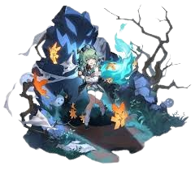

| Huo Huo | |
|---|---|
| La maldita | |
|  | |
| Rareza: | 5 estrellas |
| Tipo: | Viento |
| Facción: | Abundancia |
"Puedo usar este estandarte para ahuyentar demonios... pero también es útil para señalar mi rendición..."
Una chica foxiana pitiable e indefensa que también es una jueza en formación de la Comisión de los Diez Señores, que teme a los fantasmas pero debe atraparlos. Debido a tener un heliobús llamado Tail sellado en su cola por los jueces de la Comisión de los Diez Señores, se convirtió en una "maldita" que atrae a seres inhumanos.
Ella teme a los demonios y a los heliobis, pero, por el contrario, se le encarga su captura y se le confía la pesada tarea de erradicar espíritus viles. Aunque se considera carente de habilidad, no puede reunir el valor para renunciar y sigue adelante a pesar de caminar en un valle de su propio miedo.
| Contenido |
|---|
Banner: Llamador de tormentas: Inflige daño de viento equivalente al 25% de la HP máxima de Huohuo a un enemigo objetivo.
Talisman; Protección: Disipa 1 debuff(s) de un aliado objetivo único y restaura inmediatamente los HP de este aliado en una cantidad igual al 14% de los HP máximos de Huohuo más 140. Al mismo tiempo, restaura HP para los aliados que están adyacentes a este aliado objetivo en una cantidad igual al 11.2% de los HP máximos de Huohuo más 112.
Cola; Dominación Espiritual: Regenera Energía para todos los aliados (excluyendo a este personaje) en una cantidad igual al **15%** de su Energía Máxima respectiva. Al mismo tiempo, aumenta su ATQ en un 24% durante 2 turnos.
Posesión: Metaflujo Etéreo: Después de usar su Habilidad, Huohuo gana Provisión Divina, que dura 2 turno(s). Esta duración disminuye en 1 turno al inicio de cada turno de Huohuo. Si Huohuo tiene Provisión Divina cuando comienza el turno de un aliado o cuando un aliado usa su Definitiva, restaura HP para ese aliado por un monto igual al 3% de la HP Máxima de Huohuo más 30. Al mismo tiempo, cada aliado con 50% de HP o menos recibe curación una vez.
Cuando se activa la Provisión Divina para curar a un aliado, dispela 1 debuff(s) de ese aliado. Este efecto se puede activar hasta 6 veces. Usar la habilidad nuevamente restablece el conteo de activación del efecto.